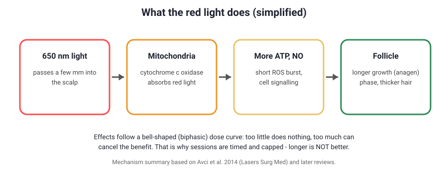
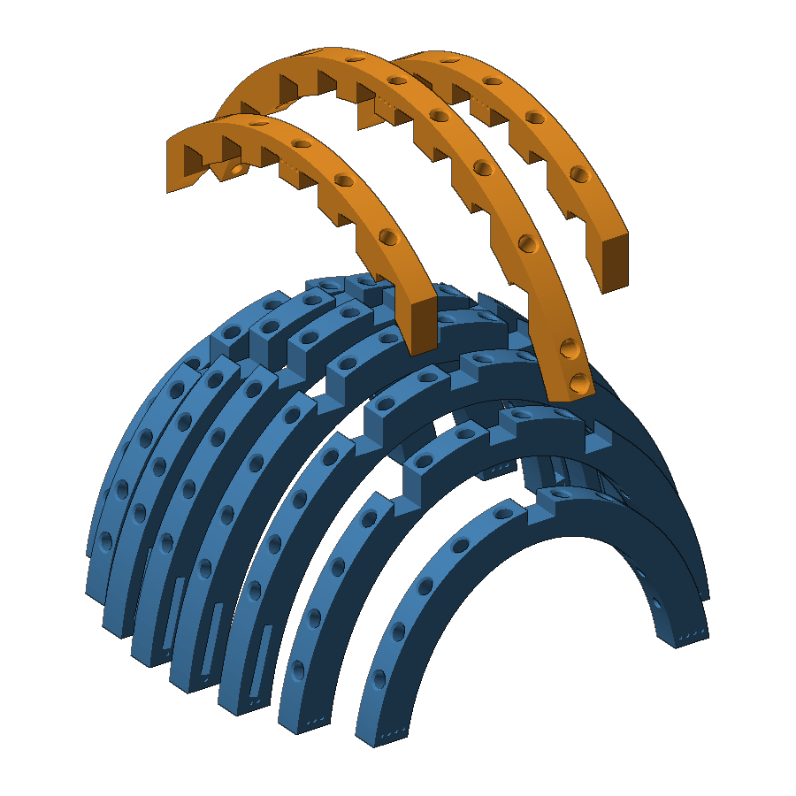
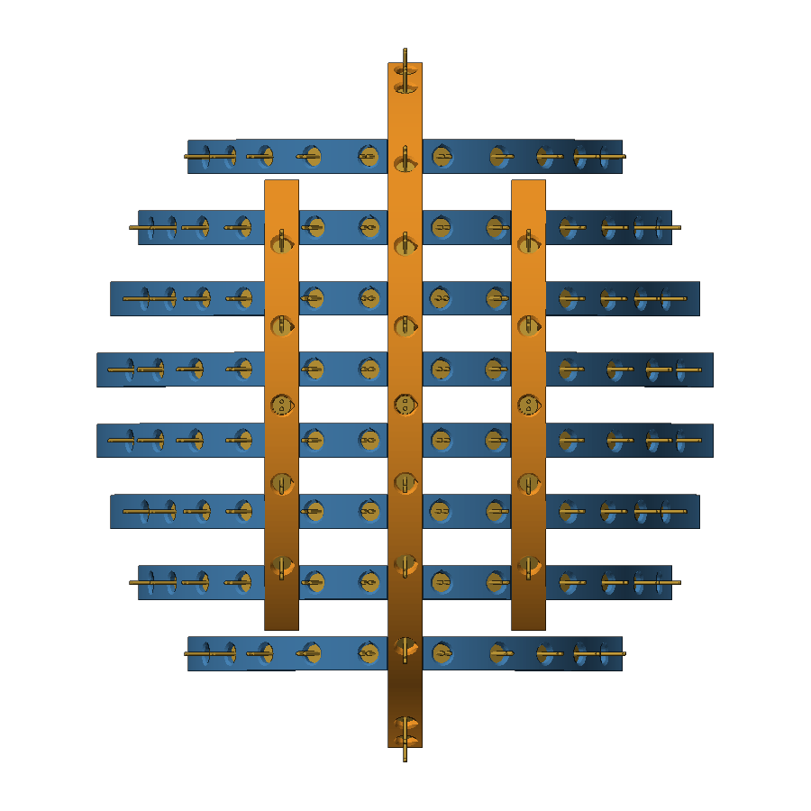
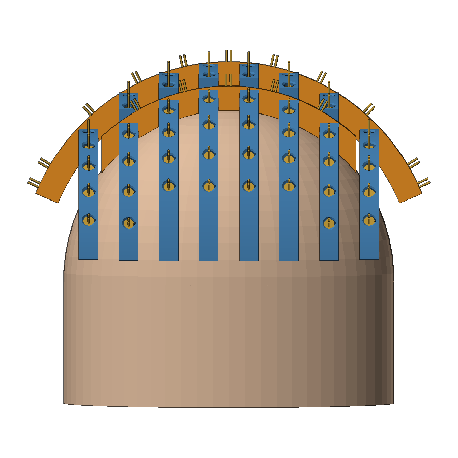
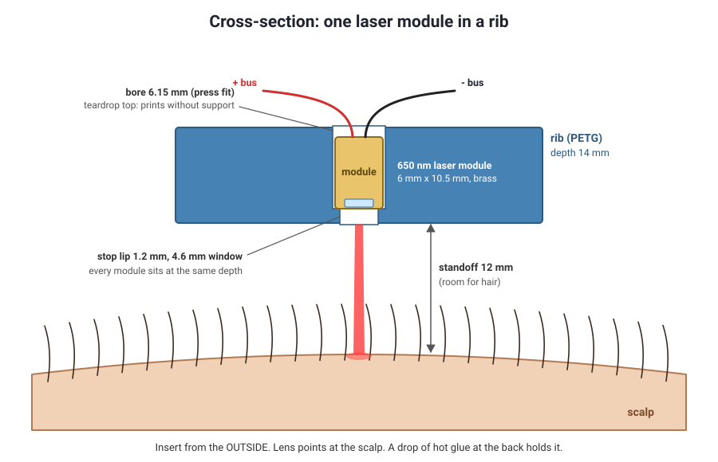
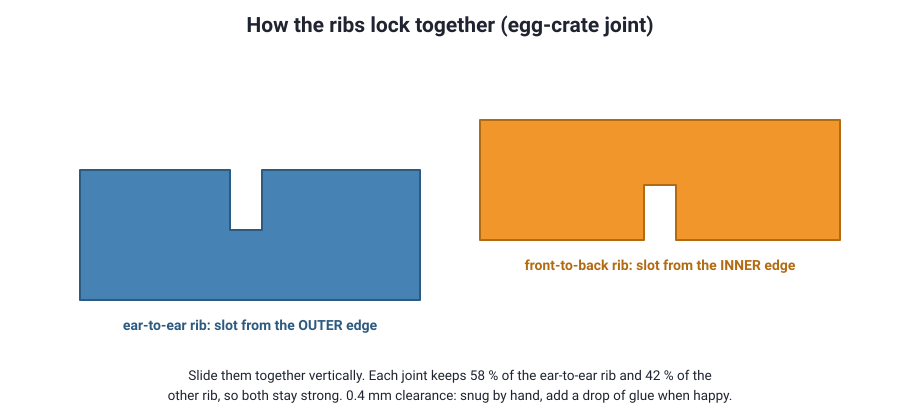
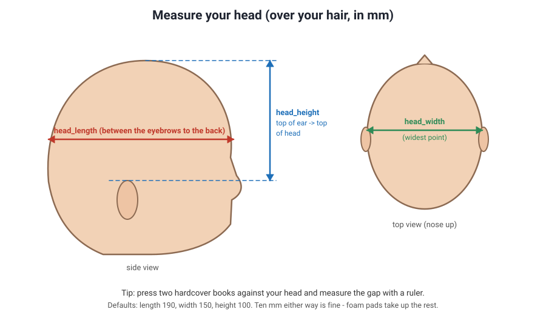
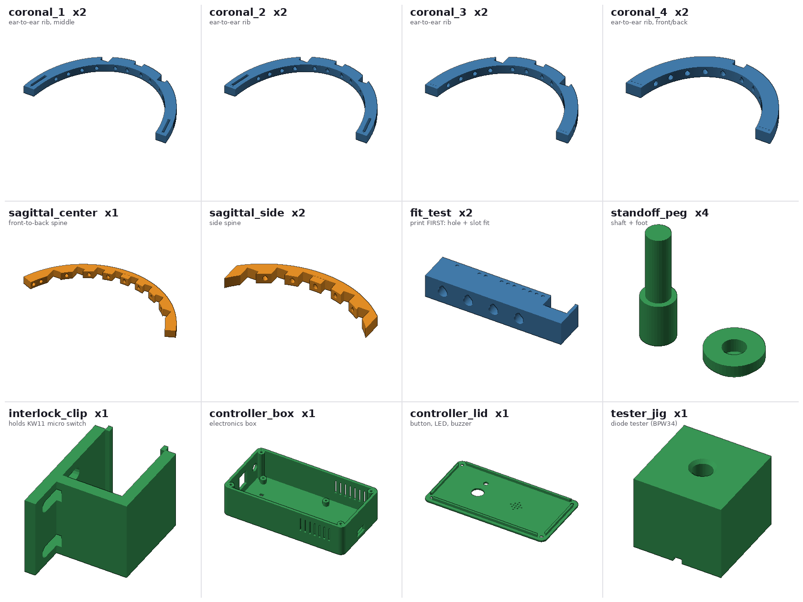
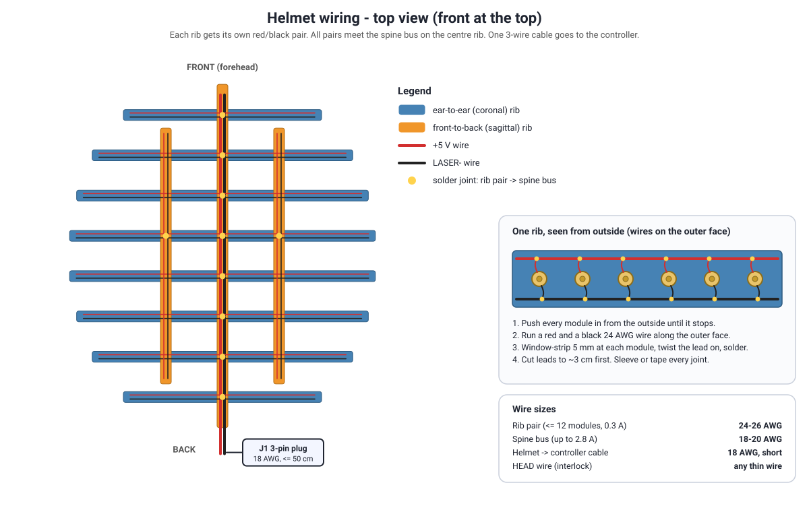
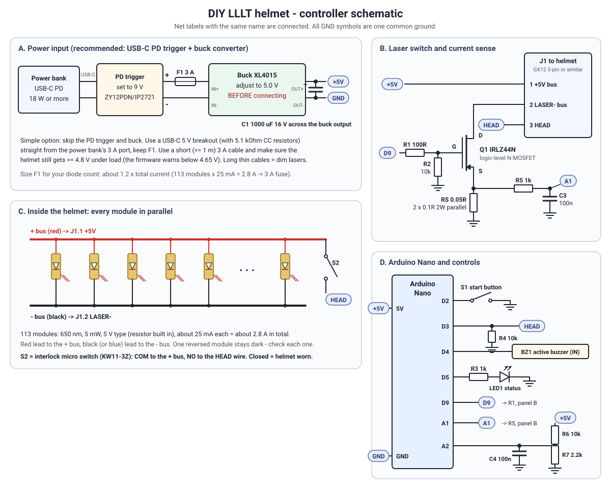

1. Safety first
Eyes: the main risk
Each module is a 5 mW visible laser. That is laser Class 3R: your blink reflex is not enough protection, but the chance of injury from a brief exposure is small (Illinois Division of Research Safety). 113 of them point into the helmet, so never look into it while it is on.
- Buy laser safety glasses rated for 650 nm (the label must list a band such as 630-660 nm with OD 2 or higher; the lenses look green or blue-green). Many cheap "laser glasses" are rated 190-540 nm and 800-1100 nm. Those let red light straight through.
- Wear them for every bench test, for diode testing and whenever the helmet is powered and not on your head.
- The firmware only lets the lasers run while the head switch is pressed by your head, and cuts them the moment you lift the helmet. Fit that switch (step 9). Do not bypass it.
- Test every module before fitting it (step 3). Cheap modules sold as "5 mW" vary a lot. Some listings even state 40 mA current or tens of mW in the spec table (example listing). Anything clearly above 5 mW is Class 3B and does not belong in this helmet.
- Keep children and pets away. No mirrors or shiny surfaces near the open helmet.
Skin and medical
- Do not use it if you have scalp cancer, open wounds or a scalp condition, light-sensitive skin, or are under 18. Commercial makers give the same warnings (iRestore manual).
- Do not use it while taking light-sensitising medicines or products (Capillus). Examples include some antibiotics (doxycycline), isotretinoin and some diuretics. Ask your doctor or pharmacist.
- Pregnancy: no safety data, so skip it.
- Stop if you get redness, itching, headaches or a burning feeling.
Electrical and heat
- Everything runs from a 5 V supply, so there is no shock risk. The risks are short circuits and heat. The design has a fuse, a current monitor that switches off on a short, and an alarm if current flows when the lasers should be off.
- Use a branded power bank. Do not build battery packs from loose lithium cells.
- 113 modules draw about 2.8 A at 5 V, which is about 14 W of heat spread over the frame. The open frame lets that air out. Modules feel warm, not hot. If any spot gets hot, stop and find out why.
- Print in PETG, not PLA. PLA starts to soften around 55-60 °C.
2. What LLLT can and cannot do

What the trials show. The best-known randomised, sham-controlled trials used a bicycle-helmet device ("TOPHAT655") with 21 lasers of 5 mW at 655 nm plus 30 LEDs. Users treated at home for 25 minutes every other day for 16 weeks. Hair counts rose about 35 % more than with a sham helmet in men (Lanzafame 2013) and 37 % more in women (Lanzafame 2014), with no side effects reported. A 2025 meta-analysis of 38 studies (3,098 patients) found hair density improved versus placebo in pattern hair loss, with large differences between studies (Perez et al., Dermatologic Surgery).
Not every trial is positive. A 2023 randomised trial from Bhavnagar, Gujarat added LLLT twice a week to 5 % minoxidil. After 16 weeks the gain in hair density was 14.8 % versus 11.4 % with minoxidil alone, and the difference was not statistically significant (Sondagar et al., IDOJ).
- It works best for early to moderate thinning (Norwood II-V, Ludwig I-II). It does not bring back shiny, completely bald skin.
- Hair grows slowly. Judge it after 4-6 months, using photos taken the same way every month.
- The gains are modest. LLLT is usually an add-on to the treatments your doctor recommends (minoxidil, finasteride and others), not a replacement.
- More light is not better. Light therapy has a bell-shaped dose response, so stick to the timed sessions.
3. The design
The frame is an "egg-crate" made of flat ribs that slot into each other. Eight ear-to-ear ribs (blue) cross three front-to-back ribs (orange). Every rib is cut from a mathematical model of your head (a half-ellipsoid), so its inner face sits 12 mm above your scalp all over. Each laser hole points at the scalp and has a small stop lip, so all modules sit at the same depth.




Why it is built this way
- Flat parts only. Curved helmet shells need supports and a big printer. Flat ribs print fast, need no supports and fit a 180 x 180 mm bed (largest part is 174 mm when placed diagonally).
- Open frame. About 14 W of heat leaves through the gaps. You can wear a stretchy beanie over it to hide it and block stray light.
- Parametric. Change three head measurements in OpenSCAD and every rib, slot and hole is recalculated. The model checks that no two ribs collide and reports the module count.
- Safety in the controller. Hold-to-start, a head switch, a hard 30-minute limit, a watchdog, and current and voltage monitoring.

4. Parts list (India)
Prices are approximate (November 2026) and change often. Search the shop names below with the text in the "what to search for" column. The same list is in bom/bom_india.csv for a spreadsheet. For comparison, commercial devices start at about $499 (iRestore) and $1,699 (Capillus) in the US (Cybernews comparison).
| Item | What to search for | Qty | Approx. ₹ | Where (India) | Notes |
|---|---|---|---|---|---|
| Lasers | |||||
| Red laser dot module | 650 nm 5 mW 6 mm 5V laser dot diode module with leads (about 25 mA) | 130 | 3,250 | Robocraze, Robu.in, RoboticsDNA, REES52, Amazon.in packs of 10-50, AliExpress (cheapest in bulk) | 113 needed + spares. Avoid listings that say 40 mA or more than 5 mW. Test every one. |
| Laser safety glasses | Laser safety glasses rated for 650 nm (630-660 nm band, OD 2 or higher). Lenses look green/cyan | 1 | 1,000 | Amazon.in, AliExpress, laser-equipment shops | Glasses rated only for 190-540 nm / 800-1100 nm do NOT block red. Check the printed band. |
| BPW34 photodiode | BPW34 PIN photodiode | 2 | 100 | Robu.in, ElectronicsComp, Probots, local electronics market | Only for the diode tester. |
| Printing | |||||
| PETG filament | PETG 1.75 mm 1 kg (black or dark grey) | 1 | 1,150 | REES52 (eSUN), WOL3D, Flipkart, Amazon.in | About 300 g used. Or order the STLs from a 3D printing service. |
| Controller | |||||
| Arduino Nano | Nano V3 ATmega328P 5V CH340 | 2 | 500 | Robocraze, Robu.in, Quartz Components | One for the controller, one for the tester (or reuse). |
| Logic-level MOSFET | IRLZ44N TO-220 | 2 | 80 | Robu.in, Robocraze, ElectronicsComp | Must be logic-level (IRL...). IRF520/IRFZ44N are not. |
| USB-C PD trigger | USB-C PD decoy / trigger board 9V (ZY12PDN, IP2721 / PDC004) | 1 | 200 | Quartz Components, Robu.in, Amazon.in | Set or solder-jumper it to 9 V. Skip for the simple 5 V option. |
| Buck converter | XL4015 5A DC-DC step-down module (with heatsink) | 1 | 250 | Robocraze, Quartz Components, REES52, Flipkart | Adjust to 5.0 V with no load BEFORE connecting the helmet. |
| Fuse | 3 A resettable PTC fuse (or 3 A blade fuse + inline holder) | 1 | 30 | Robu.in, local market | About 1.2 x total laser current. |
| Resistor assortment | 1/4 W resistor kit (needs 100R x3, 10k x3, 1k x2, 2.2k, 470R, 10R) | 1 | 200 | Robu.in, Robocraze, Amazon.in | |
| Shunt resistors | 0.1 ohm 2 W resistor | 2 | 20 | Robu.in, local market | Two in parallel = 0.05 ohm current sense. |
| Capacitors | 1000 uF 16 V electrolytic x1, 100 nF ceramic x3 | 1 | 40 | Robu.in, local market | |
| Push button | 12 mm momentary push button, panel mount | 1 | 40 | Robu.in, Robocraze | |
| LED | 5 mm LED (any colour except red) | 1 | 5 | anywhere | Green or blue so it is not confused with the lasers. |
| Buzzer | 5V active buzzer module | 1 | 40 | Robu.in, Robocraze | |
| Interlock switch | KW11-3Z lever micro limit switch | 2 | 30 | Robu.in, mikroelectron, local market | One spare. |
| Perfboard | 5 x 7 cm double-side prototype PCB | 2 | 80 | Robu.in, Robocraze | |
| Helmet connector | GX12 3-pin aviation connector pair (or XT30 + 2-pin JST) | 1 | 80 | Robu.in, Amazon.in | Keyed, so it cannot be plugged in backwards. |
| Power | |||||
| USB-C cable | USB-C to USB-C cable rated 3 A / 60 W, 1 m | 1 | 200 | anywhere | Short and thick. Thin cables drop voltage. |
| Power bank | 10000 mAh power bank, USB-C PD 18 W or more (9 V output) | 1 | 1,200 | Mi, Ambrane, Anker, Portronics etc. | You may already own one. About 4-6 sessions per charge. |
| Wiring | |||||
| Silicone wire 24 AWG | 24 AWG silicone wire, red + black, 5 m each | 1 | 300 | Robu.in, Amazon.in | Rib pairs. |
| Silicone wire 18 AWG | 18 AWG silicone wire, red + black, 2 m each | 1 | 150 | Robu.in, Amazon.in | Spine bus and helmet cable. |
| Heat-shrink kit | Heat-shrink tube assortment | 1 | 150 | anywhere | |
| Kapton tape | Polyimide (Kapton) tape 10 mm | 1 | 150 | Robu.in, Amazon.in | Optional, insulates joints neatly. |
| Solder + flux | 60/40 or 63/37 0.8 mm solder, flux pen | 1 | 200 | anywhere | If you do not have them. |
| Fit | |||||
| Elastic strap | 25 mm elastic band 1 m + 25 mm plastic buckle or velcro | 1 | 150 | tailoring / haberdashery shop, Amazon.in | Goes through the strap slots. |
| Foam | EVA foam sheet 5-10 mm or self-adhesive foam strip | 1 | 150 | stationery / hardware shop | Pads at the rib feet and forehead. |
| Glue | Hot-glue sticks + CA gel or 2-part epoxy | 1 | 250 | stationery / hardware shop | |
| Screws | M3 x 8 self-tapping x4 (box lid), M2 x 10 + nuts x2 (switch) | 1 | 80 | hardware shop, Robu.in | |
| Zip ties | 100 mm cable ties | 1 | 60 | anywhere | |
| Cap cover (optional) | stretchy beanie / skull cap that fits over the frame | 1 | 200 | anywhere | Hides the frame and blocks stray light. |
| Tools (if needed) | |||||
| Soldering iron | 25-60 W temperature-controlled iron | 1 | (800) | Robu.in, Amazon.in | Not counted in the total. |
| Multimeter | Basic digital multimeter | 1 | (600) | anywhere | Not counted in the total. Needed to set the buck to 5.0 V. |
| USB-C power meter | USB-C inline voltage/current meter | 1 | (500) | Amazon.in | Optional, very handy. |
| Total (approx.) | ₹10,335 | Approximate, Nov 2026 prices. About 9,100 without the power bank (if you already own one). | |||
5. Tools
- A 3D printer that can print PETG (any 180 x 180 mm bed or bigger), or an online/local 3D printing service.
- Soldering iron, solder, flux, side cutters, wire stripper.
- A multimeter. You need it to set the buck converter to 5.0 V.
- A computer with the free OpenSCAD (only if your head size differs from the defaults) and the Arduino IDE.
- Hot glue gun. A USB-C power meter is optional but handy.
6. Build steps
1Measure your head

Measure over your hair, in millimetres. The defaults are head_length = 190, head_width = 150, head_height = 100. If you are within about 10 mm of those, use the ready-made STL files in stl/. Otherwise:
- Install OpenSCAD and open
cad/lllt_helmet.scad. - Open Window > Customizer, type your three measurements, keep
part = assemblyand press F5 to preview the frame on a head model. - Pick each part from the
partlist, press F6 (render) and F7 (export STL). Or runtools/export_all.sh -D head_length=200 -D head_width=158 -D head_height=105to export everything in one go. - The console prints the module count, for example
DIODES TOTAL: 113. Buy that many plus spares.
2Print the parts

Print fit_test first (two copies). It has four holes, 6.0 / 6.1 / 6.2 / 6.3 mm, marked with 1-4 dots, and one rib slot.
- Push a module into each hole from the flat side. Pick the hole where it needs a firm push and does not fall out. If that is the 3-dot hole (6.2 mm), set
diode_fit = 0.2. The default 0.15 sits between the 2- and 3-dot holes. - Cross the two coupons at their slots. They should slide together by hand without wobbling. If they are tight, raise
slot_clearto 0.5-0.6. If loose, lower it to 0.3.
| Setting | Value |
|---|---|
| Material | PETG (dark colour hides stray light). Nozzle about 235-245 °C, bed 75-80 °C |
| Layer height | 0.2 mm, 0.4 mm nozzle |
| Walls / top / bottom | 4 walls, 5 top and bottom layers (holes need solid walls) |
| Infill | 25-30 % gyroid |
| Supports | None. Holes have teardrop tops so they bridge cleanly |
| Adhesion | 5 mm brim on the long ribs |
| Orientation | As exported: ribs lie flat; the box stands on its floor |
Print time depends on your printer; expect roughly a day of printing in total. After printing, clear stringing from the holes with a 6 mm drill bit turned by hand. Do not drill them bigger.
3Test and sort the laser modules
This is the most important safety step. Wear the 650 nm glasses.
- Build the tester on a breadboard: an Arduino Nano, an IRLZ44N MOSFET to switch the module, a 10 Ω resistor in the module's ground path (current sense), and a BPW34 photodiode in the printed
tester_jig(wiring is at the top offirmware/diode_tester/diode_tester.ino). - Upload
diode_tester.ino, open the Serial Monitor at 115200 baud. - Put a module in the jig, lens down. Press the button. You get one line per module, for example
12,24.6,4.12,OK(number, mA, approximate mW, verdict). - The tester rejects modules that draw too much current, are weak, are above 5.5 mW, or are far from the batch median. Put rejects in a separate bag and never use them.
- Type
mfor a summary. Note the median mW. You will enter it in the dose calculator.
4Assemble the frame
Ribs carry engraved dots: ear-to-ear ribs have 1-4 dots near both feet (1 = middle pair, 4 = front and back pair). The front-to-back ribs have 5 dots (centre) or 6 dots (sides) at the top.
- Lay the centre rib (5 dots) on the table, curved outer edge down, so its slots face up.
- Push the ear-to-ear ribs into it, upside down, in order 4-3-2-1-1-2-3-4 from front to back. The front and back halves are identical.
- Add the two side ribs (6 dots) into the slots of ribs 1-3.
- Turn it over and check it on your head. Every rib should sit square, with no rocking.
- Once you are happy, put a drop of CA gel or epoxy into every joint. Leave the frame to cure overnight.
5Fit the laser modules
- Cut each module's leads to about 3 cm and strip 4 mm.
- Push each module in from the outside until it stops at the lip. The lens faces your head.
- Put a small bead of hot glue where the module meets the rib on the outside. Keep glue away from the lens side.
- Bend the red lead to one edge of the rib and the black lead to the other edge. Keep the same side on every rib.
6Wire the helmet

- On each rib, run a red and a black 24 AWG wire along the outer face. At every module, strip a 5 mm window in the insulation, wrap the lead around it and solder. Insulate each joint with Kapton tape or a dab of hot glue.
- Test every rib on its own before joining. With glasses on, connect the rib's pair to 5 V and point it at a sheet of paper. Count the dots. A dark module is almost always reversed or not soldered.
- Run the spine bus: 18-20 AWG red and black along the centre rib. Solder each rib's pair to it where that rib crosses the centre rib.
- At the back, connect the spine bus and the HEAD wire to the 3-pin plug (pin 1 = +5 V, pin 2 = LASER-, pin 3 = HEAD). Use 18 AWG and keep the cable to the controller under 50 cm.
- Tie the wires to the ribs with zip ties so nothing can snag.
7Build the controller


- Set the buck converter first. Connect only the PD trigger (set to 9 V) and the buck converter to the power bank. Turn the buck's screw until your multimeter reads 5.0 V at its output. Only then connect anything else.
- Build the circuit on the 5 x 7 cm perfboard: Nano, IRLZ44N, two 0.1 Ω resistors in parallel (current sense), the fuse, resistors and capacitors from the schematic. Use thick wire or solder bridges for the high-current path: +5 V > helmet > MOSFET > shunt > GND.
- Fit the perfboard on the four posts in
controller_box, the buck converter next to it (near the vents), the USB-C input in the end wall, and the 3-pin socket in the other end wall. The button, status LED and buzzer go in the lid. - Before connecting the helmet, measure resistance between +5 V and GND. It must not be near zero.
8Flash the firmware
- In the Arduino IDE open
firmware/lllt_controller/lllt_controller.ino. - Board: Arduino Nano. Processor: ATmega328P, or ATmega328P (Old Bootloader) for most cheap clones. Pick the port and upload. Disconnect the power bank while the USB cable is plugged into your computer.
- Open the Serial Monitor at 115200 baud. Type
hfor help andsfor status. - Optional calibration: measure the voltage on the Nano's AREF pin and write it into
VREF_MV(for example 1082). This makes the voltage and current readings exact. - If you left out the current shunt or the voltage divider, set
USE_CURRENT_SENSEorUSE_VCC_SENSEto 0 before uploading.
| Button | What happens |
|---|---|
| Short press (idle) | Change preset. Beeps tell you which: 1 = 10 min, 2 = 15, 3 = 20 (default), 4 = 25 |
| Hold 2 s (idle) | Start, only if the helmet is on your head. One long beep, LED on |
| Lift the helmet | Lasers off instantly, session paused, four beeps |
| Hold 1 s (paused) | Resume. Lasers never come back on by themselves |
| Short press (running / paused) | Pause / end the session |
| Hold 3 s (running) | Stop |
| Session done | Three beeps, lasers off, the session is counted |
A short chirp sounds every 5 minutes. LED: short blink every 2 s = idle, steady = running, fast blink = paused, triple flash = fault. Faults (short circuit, no current, low supply, current while off) latch until you unplug the power.
9Strap, pads and interlock
- Strap: thread a 25 mm elastic band through the slots in the feet of ribs 1 and 2 on both sides. It runs across your forehead and around the back, like a headlamp strap. Close it with a buckle or velcro.
- Pads: stick 8-10 mm foam pads on the inner face of the rib feet, below the strap slots. Adjust thickness until the frame sits evenly with a finger-width gap above your hair.
- Standoff pegs (optional): put 3 pegs in place of 3 modules near the crown, on the centre rib. The shaft goes in from outside like a module, and the foot presses onto its tip from inside. Then you run 110 modules.
- Interlock: screw a KW11-3Z lever switch onto
interlock_clip(M2 screws through the slots) and snap the clip onto a rib-3 foot, below its lowest module. Slide the switch so the lever is pressed by your head when the strap is on, and released when the helmet is lifted 1 cm. Wire COM to the helmet's +5 V bus and NO to the HEAD wire.
10First power-up checklist
- Safety glasses on. Helmet placed on a head-sized object (a football or a pot) with a light cloth over it, so the head switch is pressed.
- Supply reads 5.0 V on the Serial Monitor (
s). - Start a 10-minute session. The first session learns the normal current after 20 s. It should be close to modules x 25 mA (about 2.8 A for 113).
- Count the red dots on the cloth, or check rib by rib. All should be lit.
- Lift the helmet: the lasers must go off immediately. Put it back: they must stay off until you hold the button.
- After 10 minutes, touch the modules, the controller box and the buck converter. Warm is fine. Hot is not.
7. How to use it
- One 20-minute session every other day (3-4 times a week). Never two days in a row.
- Clean, dry scalp: no oil, gel or minoxidil residue during the session. If you use minoxidil, apply it after.
- Keep going at least 16 weeks before you judge, and up to 6 months.
- Take photos every 4 weeks in the same light, from the same angle, with the hair parted the same way.
Why 20 minutes? Cleared devices deliver roughly 450-650 J of laser light per session: Capillus 272 (272 lasers, 6 min daily), Theradome PRO (80 lasers, 20 min twice a week, FDA K122950), iRestore Professional (82 lasers plus 200 LEDs, 25 min every other day, manual). These figures assume 5 mW per laser and do not count LEDs. With 113 modules at about 4 mW, 20 minutes gives about 540 J, in the middle of that range. Capillus also states that going over the recommended time does not add benefit and may reduce it (Capillus). Use the calculator below with your tester median.
During a session you can sit, read or watch TV. Do not sleep with it on. Do not look up into the helmet when you take it off; the lasers switch off when the head switch opens, but make it a habit.
8. Dose calculator
Area: length width height mm (scalp more than 4 cm above the ears).
Green band: 450-650 J, the range the cleared devices above deliver per session (lasers only, assuming 5 mW each). These are engineering comparisons, not a prescription.
9. Session log
Stored only in this browser (localStorage). It warns you if you already had a session yesterday.
10. Troubleshooting
| Symptom | Likely cause and fix |
|---|---|
| Two long beeps, will not start | Head switch is open. Check the lever reaches your head, the HEAD wire, and the 10 k pull-down. Serial says "Put the helmet on first". |
| One rib dark | Its pair is not soldered to the spine bus, or red and black are swapped on that rib. |
| One module dark | Reversed or broken joint. Swap it for a tested spare. |
| "supply ... lasers are dimmer" | Supply under 4.65 V. Use the PD-plus-buck option, a shorter thicker cable, or a charged power bank. |
| FAULT "over-current" / "current far above normal" | Short circuit, often a bare lead touching the other bus. Unplug and inspect with a multimeter. |
| FAULT "no laser current" | Helmet plug out, broken cable, blown fuse, or the MOSFET is not switching (wrong type, gate wire). |
| FAULT "current flows while lasers are OFF" | The MOSFET has failed shorted, so the lasers are on all the time. Unplug at once and replace it. |
| Warning "current is low" | A rib or module came loose since the current was learned. After replacing modules, type b so it learns again. |
| Nano keeps rebooting | Some clones with old bootloaders reboot-loop with the watchdog. Burn a new bootloader, or set USE_WATCHDOG 0. |
| Power bank switches off | It may not support 9 V PD (use the simple 5 V option) or its port is under 3 A. |
| Modules fall out | Holes are too big. Reprint with a smaller diode_fit, or glue them. |
11. FAQ
Why lasers and not red LEDs?
Red LEDs are cheaper and spread their light wider, and some studies used them. The studies this design copies used 5 mW lasers at 650-655 nm, and laser modules make the dose easy to calculate. An LED version would need different spacing and dosing.
Why 650 nm?
Cleared devices use about 630-680 nm. 650 nm modules are the cheapest and easiest to find in India.
Can I use more modules or longer sessions?
More modules give better coverage; reduce the minutes so the energy stays in the green band. Longer sessions do not help and may work against you.
Can I use the 3 V modules?
Only if all of them are 3 V and you set the buck converter to their rated voltage. Never run 3 V modules on 5 V.
Every day instead of every other day?
The helmet protocols in the trials and manuals above use every other day, or twice a week. Stick to that.
Does hair block the light?
Thick hair absorbs some of it. That matters less where hair is thinning, which is where you want the light. Keep the scalp clean and dry.
Can I build these for friends or sell them?
No. This is an uncertified home build for your own use.
12. Files in this folder
| Path | What it is |
|---|---|
cad/lllt_helmet.scad | Parametric OpenSCAD model of every part. Also checks for collisions (part = check_interference must render empty). |
stl/*.stl | Ready-to-print parts for the default head size |
firmware/lllt_controller/ | Controller firmware (Arduino Nano) |
firmware/diode_tester/ | Module tester firmware |
electronics/schematic.svg, wiring.svg | Controller schematic and helmet wiring diagram |
bom/bom_india.csv | Parts list with Indian shops and prices |
tools/export_all.sh | Exports every STL with your measurements |
tools/make_images.py, render_stl.py, make_svgs.py | Regenerate the pictures in this guide |
DIY-LLLT-Helmet-Guide.html | This guide as one self-contained file (images built in), for your phone |
13. Sources
- Lanzafame RJ et al. The growth of human scalp hair mediated by visible red light laser and LED sources in males. Lasers Surg Med 2013;45:487-495. PubMed 24078483
- Lanzafame RJ et al. The growth of human scalp hair in females using visible red light laser and LED sources. Lasers Surg Med 2014;46:601-607. PMC4265291
- Perez SM et al. Low-Level Laser and LED Therapy in Alopecia: A Systematic Review and Meta-Analysis. Dermatol Surg 2025;51:179-183. PubMed 39404126
- Sondagar DM et al. Efficacy of Low-Level Laser Therapy in Androgenetic Alopecia: A Randomized Controlled Trial. Indian Dermatol Online J 2023. PMC10251294
- Avci P et al. Low-level laser (light) therapy (LLLT) for treatment of hair loss. Lasers Surg Med 2014. PMC3944668
- FDA 510(k) K122950, Theradome Laser Helmet LH80 PRO (20 min twice a week, automatic timer). PDF
- iRestore Professional 282 user manual (25 min every other day). ManualsLib; iRestore warnings: operating manual
- Capillus usage notes (6 min daily, do not exceed; photosensitising products). capillus.com, capillus.com
- Laser classification (Class 3R). University of Illinois Division of Research Safety. drs.illinois.edu
- Typical 6 mm 650 nm 5 mW module specifications (5 V, about 25 mA). ShillehTek manual
- BPW34 photodiode datasheet (0.62 A/W at 850 nm, 2.65 x 2.65 mm sensor). Osram datasheet
Study summaries in this guide are paraphrased.